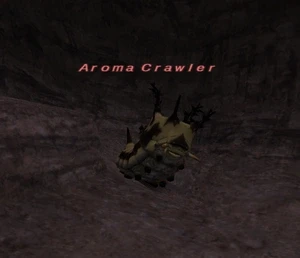
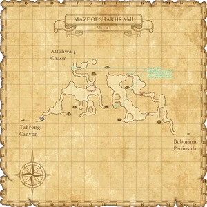

Level 75 reference · Zenith rules
|
Job: Notorious Monster |
 |

|
Zone |
Level |
Drops |
Steal |
Spawns |
Notes |
|
44-48 |
|||||
|
HP = Detects Low HP; M = Detects Magic; Sc = Follows by Scent; T(S) = True-sight; T(H) = True-hearing JA = Detects job abilities; WS = Detects weaponskills; Z(D) = Asleep in Daytime; Z(N) = Asleep at Nighttime | |||||


Notes:
- Can be spawned during your RSE week by clicking on a ???.
- ~3300HP
- Has a rare on hit slow effect
- Soloable at 55-60
- Soloable by BST/BLU at 50
- Drop rate on your Sachet is ~15%
- ??? respawn every 30 minutes.
- ??? have been seen at:
- F-5 on the first map, near Attohwa Chasm zone
- J-6 on the first map, at the bottom of the dropoff
- I-8 on the first map, at the T-intersection
Adapted from Eden Wiki: Aroma Crawler · Contributors and history · CC BY-SA 4.0. Revision 46739. Layout, links and optional background text adapted for Zenith.